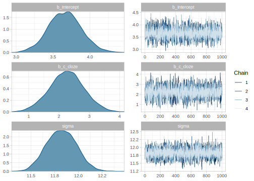

4.3 Logistic regression: Does set size affect free recall?
We’ll look at the capacity limit of working memory to illustrate how the principles we have learned so far can naturally extend to generalized linear models (GLMs). In this section, we focus on one special case of GLMs, logistic regression.
For this example, we’ll use a subset of the data of Oberauer (2019) from https://osf.io/qy5sd/. We’ll focus on one subject who was presented word lists of varying lengths (2, 4, 6, and 8 elements), and then was asked to recall a word given its position on the list; see Figure 4.9.10

FIGURE 4.9: Flow of events in a trial with memory set size 4 and free recall. Adapted from Oberauer (2019); licensed under CC BY 4.0.
It is well established that as the number of items to be held in working memory increases, performance, that is accuracy, decreases (among others Oberauer and Kliegl 2001). We will investigate whether we can establish this finding with data from only one subject.
df_recall_data <- read_csv("./data/PairsRSS1_all.csv") %>%
# We ignore the type of incorrect responses (the focus of the paper)
mutate(correct = if_else(response_category ==1, 1, 0)) %>%
# and we only use the data from the free recall task:
# (when there was no list of possible responses)
filter(response_size_list + response_size_new_words == 0) %>%
# We select one subject
filter(subject == 10) %>%
mutate(c_set_size = set_size - mean(set_size)) %>%
select(subject, set_size, c_set_size, correct, trial, session, block, tested)
# we can ignore the warning from read_table
# Set sizes in the dataset:
df_recall_data$set_size %>%
unique## [1] 4 8 2 6## # A tibble: 4 x 2
## # Groups: set_size [4]
## set_size n
## <dbl> <int>
## 1 2 23
## 2 4 23
## 3 6 23
## 4 8 23The data look like this: the column correct records the 0 (incorrect) or 1 (correct) responses, and the column c_set_size records the centered memory set size; these latter scores have continuous values -3, -1, 1, and 3. These continuous values are centered versions of 2, 4, 6, and 8.
## # A tibble: 92 x 8
## subject set_size c_set_size correct trial session
## <dbl> <dbl> <dbl> <dbl> <dbl> <dbl>
## 1 10 4 -1 1 1 1
## 2 10 8 3 0 4 1
## 3 10 2 -3 1 9 1
## 4 10 6 1 1 23 1
## 5 10 4 -1 1 5 1
## block tested
## <dbl> <dbl>
## 1 1 2
## 2 1 8
## 3 1 2
## 4 1 2
## 5 2 3
## # … with 87 more rowsWe want to model the trial by trial accuracy and examine whether the probability of recalling a word is related to the number of words in the set that the subject needs to remember.
4.3.1 The likelihood for the logistic regression model
Recall that the Bernoulli likelihood generates a 0 or 1 response with a particular probability \(\theta\). For example, one can generate simulated data for 10 trials, with 50% chances of getting a one as follows:
# We use as.numeric to get zeros and ones rather than FALSE and TRUE
rbernoulli(n = 10, p = 0.5) %>% as.numeric()## [1] 1 1 0 1 0 0 0 0 1 1We can therefore define each dependent value correct_n in the data as being generated from a Bernoulli random variable with probability of success \(\theta_n\).
Here, \(n =1, \ldots, N\) indexes the trial, correct_n is the dependent variable (0 indicates an incorrect recall and 1 a correct recall), and \(\theta_n\) is the probability of correctly recalling a probe in a given trial \(n\).
\[\begin{equation} correct_n \sim Bernoulli(\theta_n) \tag{4.4} \end{equation}\]
Since \(\theta_n\) is bounded to be between 0 and 1 (it is a probability), we cannot just fit a regression model using the normal or lognormal likelihood as we did in the preceding examples. Such a model would be inappropriate because it would assume that the data range from \(-\infty\) to \(+\infty\), rather than from 0 to 1.
The generalized linear modeling framework solves this problem by defining a so-called link function \(g(\cdot)\) that connects the linear model to the quantity to be estimated (here, the probabilities \(\theta_n\)). The link function used for 0,1 responses is called the logit link, and is defined as follows.
\[\begin{equation} \eta_n = g(\theta_n) = \log\left(\frac{\theta_n}{1-\theta_n}\right) \end{equation}\]
The term \(\frac{\theta_n}{1-\theta_n}\) is called the odds.11 The logit link function is therefore a log-odds; it maps probability values ranging from \([0,1]\) to real numbers ranging from \((-\infty,+\infty)\). Figure 4.10 shows the logit link function, \(\eta = g(\theta)\), and the inverse logit, \(\theta = g^{-1}(\eta)\), which is called the logistic function; the relevance of this logistic function will become clear in a moment.

FIGURE 4.10: The logit and inverse logit (logistic) function.
The linear model is now fit not to the 0,1 responses as the dependent variable, but to \(\eta_n\), i.e., log-odds, as the dependent variable:
\[\begin{equation} \eta_n = \log\left(\frac{\theta_n}{1-\theta_n}\right) = \alpha + \beta \cdot c\_set\_size \end{equation}\]
Once \(\eta_n\) is estimated, one can easily compute the parameters of interest, the estimated probabilities, by solving the above equation for \(\theta_n\) (in other words, by computing the inverse of the logit function), which is the above-mentioned logistic regression function:
\[\begin{equation} \theta_n = g^{-1}(\eta_n) = \log\left(\frac{\exp(\eta_n)}{1+\exp(\eta_n)}\right) \end{equation}\]
In summary, the generalized linear model with the logit link fits the following Bernoulli likelihood:
\[\begin{equation} correct_n \sim Bernoulli(\theta_n) \tag{4.5} \end{equation}\]
The model is fit on the log-odds scale, \(\eta_n = \alpha + c\_set\_size_n \cdot \beta\). Once \(\eta_n\) has been estimated, the inverse logit or the logistic function is used to compute the probability estimates \(\theta_n = \log(\frac{\exp(\eta_n)}{1+\exp(\eta_n)})\)`. An example of the calculations will be shown in the next section.
4.3.2 Priors for the logistic regression
In order to decide on priors for \(\alpha\) and \(\beta\) we need to take into account that these parameter do not represent probabilities or proportions, but log-odds, the x-axis in Figure 4.10 (right-hand side figure). As shown in the figure, the relationship between log-odds and probabilities is not linear.
There are two functions in R that implement the logit and inverse logit functions: qlogis(p) for the logit function and plogis(x) for the inverse logit or logistic function.
Now we need to set priors for \(\alpha\) and \(\beta\). Given that we centered our predictor, the intercept, \(\alpha\), represents the log-odds of correctly recalling one word in a random position for the average set size of five (since \(5 = \frac{2+4+6+8}{4}\)), which, incidentally, was not presented in the experiment. This is one case where the intercept doesn’t have a clear interpretation if we leave the prediction uncentered: With non-centered set size, the intercept will be the log-odds of recalling one word in a set of zero words.
The prior for \(\alpha\) will depend on how difficult the recall task is. If we are not sure, we could assume that the probability of recalling a word for an average set size, \(\alpha\), is centered in .5 (a 50/50 chance) with a great deal of uncertainty. The R command qlogis(.5) tells us that .5 corresponds to zero in log-odds. How do we include a great deal of uncertainty? We could look at Figure 4.10, and decide on a standard deviation of 4 in a normal distribution centered in zero:
\[\begin{equation} \alpha \sim Normal(0, 4) \end{equation}\]
Let’s plot this prior in log-odds and in probability scale by drawing random samples.
samples_logodds <- tibble(alpha = rnorm(100000, 0, 4))
samples_prob <- tibble(p = plogis(rnorm(100000, 0, 4)))
ggplot(samples_logodds, aes(alpha)) +
geom_density()
ggplot(samples_prob, aes(p)) +
geom_density()

FIGURE 4.11: Prior for \(\alpha \sim Normal(0, 4)\) in log-odds and in probability space.
Figure 4.11 shows that our prior assigns more probability mass to extreme probabilities of recall than to intermediate values. Clearly, this is not what we intended.
We could try several values for standard deviation of the prior, until we find a prior that make sense for us. Reducing the standard deviation to 1.5 seems to make sense as shown in Figure 4.12.
\[\begin{equation} \alpha \sim Normal(0, 1.5) \end{equation}\]


FIGURE 4.12: Prior for \(\alpha \sim Normal(0, 1.5)\) in log-odds and in probability space.
We need to decide now on the prior for the effect in log-odds of increasing the set size, \(\beta\). We are going to choose a normal distribution centered on zero, reflecting our lack of any commitment regarding the direction of the effect. Let’s get some intuitions regarding different possible standard deviations for this prior, by testing the following distributions as priors:
- \(\beta \sim Normal(0, 1)\)
- \(\beta \sim Normal(0, .5)\)
- \(\beta \sim Normal(0, .1)\)
- \(\beta \sim Normal(0, .01)\)
- \(\beta \sim Normal(0, .001)\)
The following function is an edited version of the earlier normal_predictive_distribution_fast from section 3.5; it has been edited to make it compatible with logistic regression and dependent on set size:
logistic_model_pred <- function(alpha_samples,
beta_samples,
set_size,
N_obs) {
map2_dfr(alpha_samples, beta_samples,
function(alpha, beta) {
tibble(
set_size = set_size,
# we center size:
c_set_size = set_size - mean(set_size),
# change the likelihood:
# Notice the use of a link function for alpha and beta
theta = plogis(alpha + c_set_size * beta),
correct_pred = rbernoulli(N_obs, p = theta)
)
}, .id = "iter") %>%
# .id is always a string and needs to be converted to a number
mutate(iter = as.numeric(iter))
}Let’s assume 800 observations with 200 observation of each set size:
We iterate over the four possible standard deviations of \(\beta\):
alpha_samples <- rnorm(1000, 0, 1.5)
sds_beta <- c(1, 0.5, 0.1,0.01, 0.001)
prior_pred <- map_dfr(sds_beta, function(sd) {
beta_samples <- rnorm(1000, 0, sd)
logistic_model_pred(alpha_samples = alpha_samples,
beta_samples = beta_samples,
set_size = set_size,
N_obs = N_obs
) %>%
mutate(prior_beta_sd = sd)
})And we calculate the accuracy for each one of the priors we want to examine, for each iteration, and for each set size.
mean_accuracy <-
prior_pred %>%
group_by(prior_beta_sd, iter, set_size) %>%
summarize(accuracy = mean(correct_pred)) %>%
mutate(prior = paste0("Normal(0, ",prior_beta_sd,")"))We plot it in Figure 4.13, and as expected the priors are centered at zero. We see that the distribution of possible accuracies for the prior that has a standard deviation of one is problematic: There is too much probability mass concentrated near zero and one for set sizes of 2 and 8.

FIGURE 4.13: Prior predictive distribution of mean accuracy of the model defined in 4.3, for different set sizes and different priors for \(\beta\).
It’s hard to tell the differences between the other priors, and it might be more useful to look at the predicted differences in accuracy between set sizes. We calculate them as follows:
diff_accuracy <- mean_accuracy %>%
arrange(set_size) %>%
group_by(iter, prior_beta_sd) %>%
mutate(diffaccuracy = accuracy - lag(accuracy) ) %>%
mutate(diffsize = paste(set_size,"-", lag(set_size))) %>%
filter(set_size >2)
FIGURE 4.14: Prior predictive distribution of differences in mean accuracy between set sizes of the model defined in 4.3 for different priors for \(\beta\).
We plot them in Figure 4.14. If we are not sure whether the increase of set size could produce something between a null effect and a relatively large effect, we can choose the prior with a standard deviation of \(0.1\). Thus we settle on the following priors:
\[\begin{equation} \begin{aligned} \alpha &\sim Normal(0, 1.5) \\ \beta &\sim Normal(0, 0.1) \end{aligned} \end{equation}\]
4.3.3 The brms model
Having decided on the likelihood, the link function, and the priors, the model can now be fit using brms. Notice that we need to specify that the family is bernoulli(), and the link is logit.
fit_recall <- brm(correct ~ 1 + c_set_size,
data = df_recall_data,
family = bernoulli(link = logit),
prior = c(
prior(normal(0, 1.5), class = Intercept),
prior(normal(0, .1), class = b, coef = c_set_size)
)
)Next, look at the summary of the posteriors of each of the parameters. Keep in mind that the parameters are in log-odds space:
## Estimate Est.Error Q2.5 Q97.5
## b_Intercept 1.92 0.309 1.34 2.550
## b_c_set_size -0.18 0.082 -0.34 -0.023Plot the posteriors as well:

Next, we turn to the question of what we can report as our results, and what we can conclude from the data.
4.3.4 How to communicate the results?
We are here in a situation analogous as before with the log-normal model. If we want to talk about the effect estimated by the model in log-odds space, we summarize the posterior of \(\beta\) in the following way: \(\hat\beta = -0.18\), 95% CrI = \([ -0.34 , -0.02 ]\).
However, the effect might be easier to understand in proportions rather than in log-odds. Let’s look at the average accuracy for the task first:
alpha_samples<- posterior_samples(fit_recall)$b_Intercept
av_accuracy <- plogis(alpha_samples)
c(mean = mean(av_accuracy), quantile(av_accuracy, c(.025,.975)))## mean 2.5% 98%
## 0.87 0.79 0.93As before, to transform the effect of our manipulation to an easier to interpret scale (i.e., proportion), we need to take into account that the scale is not linear, and that the effect of increasing the set size depends on the average accuracy, and the set size that we start from.
We can do the following calculation, similar to what we did for the trial effects experiment, to find out the decrease in accuracy in proportions or probability scale:
beta_samples<- posterior_samples(fit_recall)$b_c_set_size
effect_middle <- plogis(alpha_samples) - plogis(alpha_samples - beta_samples)
c(mean = mean(effect_middle), quantile(effect_middle, c(.025,.975)))## mean 2.5% 98%
## -0.0187 -0.0366 -0.0024Notice the interpretation here, if we increase the set size from the average set size minus one to the average set size, we get a reduction in the accuracy of recall of \(-0.02\), 95% CrI = \([ -0.04 , 0 ]\). Recall that the average set size, 5, was not presented to the subject! We could also look at the decrease in accuracy from a set size of 2 to 4:
effect_4m2 <- plogis(alpha_samples+ (4 - mean(df_recall_data$set_size)) * beta_samples) -
plogis(alpha_samples+ (2 - mean(df_recall_data$set_size)) * beta_samples)
c(mean = mean(effect_4m2), quantile(effect_4m2, c(.025,.975)))## mean 2.5% 98%
## -0.0293 -0.0541 -0.0047We see that increasing the set size does have a detrimental effect in recall, as we suspected.
4.3.5 Descriptive adequacy
One potentially useful aspect of posterior distributions is that we could also make predictions for other conditions not presented in the actual experiment, such as set sizes that weren’t tested. We could then verify if our model was right with another experiment. To make predictions for other set sizes, we extend our dataset adding rows with set sizes of 3, 5, and 7. To be consistent with the data of the other set sizes in the experiment, we add 23 trials of each new set size (this is the number of trial by set sizes in the dataset). Something important to notice is that we need to center our predictor based on the original mean set size. This is because we want to maintain our interpretation of the intercept. We extend the data as follows, and we summarize the data and plot it in Figure 4.15.
df_recall_data_ext <- df_recall_data %>%
bind_rows(tibble(set_size = rep(c(3,5,7),23),
c_set_size = set_size - mean(df_recall_data$set_size)))
df_recall_pred_ext <- posterior_predict(fit_recall,
newdata = df_recall_data_ext,
nsamples = 1000) %>%
array_branch(margin = 1) %>%
map_dfr( function(yrep_iter) {
df_recall_data_ext %>%
mutate(correct = yrep_iter)
}, .id = "iter") %>%
mutate(iter = as.numeric(iter))df_recall_pred_ext_summary <- df_recall_pred_ext %>%
group_by(iter, set_size) %>%
summarize(accuracy = mean(correct))
# observed means:
df_recall_summary<- df_recall_data %>%
group_by(set_size) %>%
summarize(accuracy = mean(correct))
ggplot(df_recall_pred_ext_summary, aes(accuracy)) +
geom_histogram(alpha=.5)+
geom_vline(aes(xintercept= accuracy),data= df_recall_summary)+
facet_grid(set_size ~ .)
FIGURE 4.15: Distribution of posterior predicted mean accuracies in gray for tested set sizes (2, 4, 6, and 8) and untested ones (3, 5, and 7), and observed mean accuracy in black lines by tested set sizes.
References
Oberauer, Klaus. 2019. “Working Memory Capacity Limits Memory for Bindings.” Journal of Cognition 2 (1): 40. https://doi.org/10.5334/joc.86.
Oberauer, Klaus, and Reinhold Kliegl. 2001. “Beyond Resources: Formal Models of Complexity Effects and Age Differences in Working Memory.” European Journal of Cognitive Psychology 13 (1-2). Routledge: 187–215. https://doi.org/10.1080/09541440042000278.
We will only use data from the recall test in which the participant had to type the probed word (and we will ignore the trials with multiple forced choice for ease of explanation).↩
Odds are defined to be the ratio of the probability of success to the probability of failure. For example, the odds of obtaining a one in a fair six-sided die are \(\frac{1/6}{1-1/6}=1/5\). The odds of obtaining a heads in a fair coin are 1/1.↩